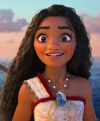

Chief TuiChief Tui is Moana's father. He is a highly protective and a responsible father for Moana and to his family. Aside of being a responsible father, the whole village also relies in his authority because he has the control to both rules, and the army of the village. He is also taking watch of the village, he protects the village from the dangerous elements of the island and beyond the reefs. Overall, his trait is more of being a protective father and a leader of their nation.SinaWhile chief Tui is a protective and authoritative type of a father, Sina on the other hand is a soft and supportive mother. She is the one who comfort Moana during her childhood and youth days. She is always at Moana's side during her trials and adjustment on achieving something. She also taught Moana about her responsibilities as a woman and a future hero of their viallge.

MoanaMoana is the main character of this movie. She grows up having a dream of going beyond the line where the sky meets the sea. She might seem hard-headed in this movie, however there is something that made her curious ad gave her the courage to tke the risk of going beyond the reefs. That kind of curiousity combined with courage have change their life and the way the live their lives as vayogers. Because of her, he brought back the true identity of their race which create a revolutional comeback of their slightly gone history.